Transformers Mixture of Experts Multi-Modal Diffusion State Space Models Vision Transformers RAG Agent Systems
From Perceptrons to Reasoning Models: A Complete Technical Survey
I. Foundations of Deep Learning
II. The Transformer Revolution
III. Transformer Variants & Evolution
IV. Scaling Laws & Large Models
V. Mixture of Experts (MoE)
VI. Multi-Modal Architectures
VII. Vision Architectures
VIII. Efficient & Novel Architectures
IX. Generative Model Architectures
X. Advanced Training Paradigms
XI. Retrieval & Memory Architectures
XII. Agent Architectures
XIII. Systems & Hardware Architecture
XIV. Future Directions
From Perceptrons to Deep Neural Networks
Rosenblatt, F. (1958). The Perceptron: A Probabilistic Model for Information Storage and Organization in the Brain
| Function | Formula | Properties | Era |
|---|---|---|---|
| Sigmoid | σ(x) = 1/(1+e-x) | Smooth, saturates, non-zero-centered | 1980s-90s |
| Tanh | tanh(x) | Zero-centered, still saturates | 1990s-2000s |
| ReLU | max(0,x) | Non-saturating, computationally cheap | 2010-present |
| Leaky ReLU | max(αx, x) | Allows small negative gradients | 2013 |
| GELU | x·Φ(x) | Smooth, used in Transformers | 2016 |
| SwiGLU | Swish + Gating | Used in PaLM, LLaMA | 2020+ |
| Mish | x·tanh(softplus(x)) | Self-regularizing, smooth | 2019 |
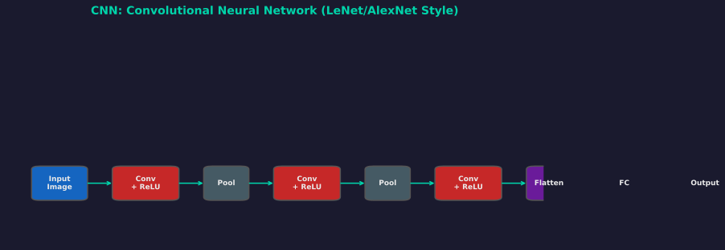
CNN Architecture
LeCun et al. (1998). Gradient-Based Learning Applied to Document Recognition
| Model | Year | Key Innovation | Params | Top-5 Error |
|---|---|---|---|---|
| LeNet-5 | 1998 | First practical CNN | 60K | - |
| AlexNet | 2012 | ReLU, Dropout, GPU training | 61M | 15.3% |
| VGG-16 | 2014 | Small 3×3 filters, very deep | 138M | 7.3% |
| ResNet-152 | 2015 | Skip connections, 152 layers | 60M | 3.6% |
| Inception-v4 | 2016 | Multi-scale filters, auxiliary classifiers | 43M | 3.1% |
| EfficientNet-B7 | 2019 | Compound scaling (depth/width/res) | 66M | 2.3% |
| ConvNeXt-XL | 2022 | CNN meets Transformer design | 350M | 2.2% |
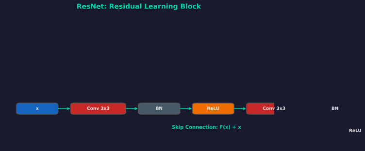
ResNet Residual Block
He et al. (2015). Deep Residual Learning for Image Recognition
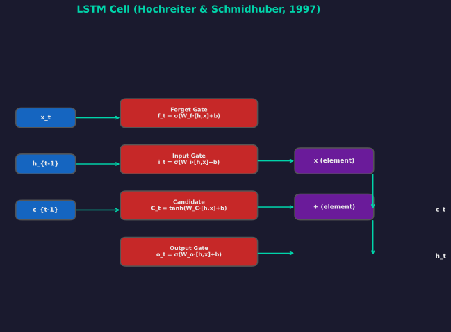
LSTM Cell
Hochreiter & Schmidhuber (1997)
Cho et al. (2014)
Sutskever et al. (2014). Sequence to Sequence Learning with Neural Networks
Bahdanau et al. (2015). Neural Machine Translation by Jointly Learning to Align and Translate
Attention Is All You Need
Vaswani et al. (2017). Attention Is All You Need. NeurIPS.
Self-Attention Parallel No RNN
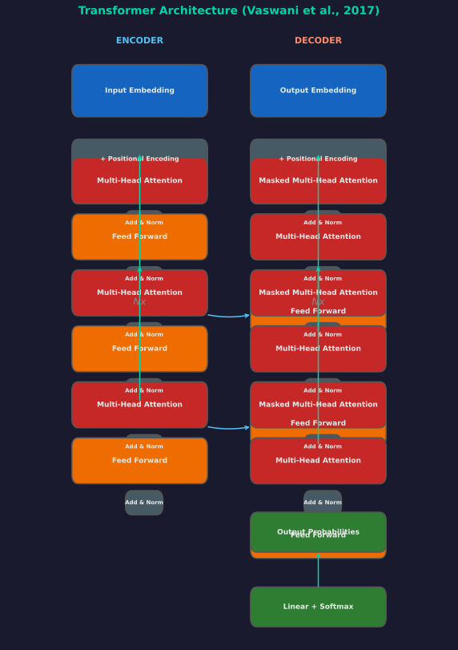
Transformer Architecture (Vaswani et al., 2017)
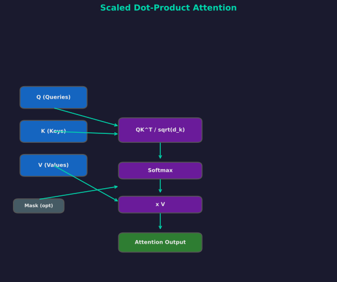
Scaled Dot-Product Attention
Input: X ∈ ℝn×d (n tokens, d dimensions)
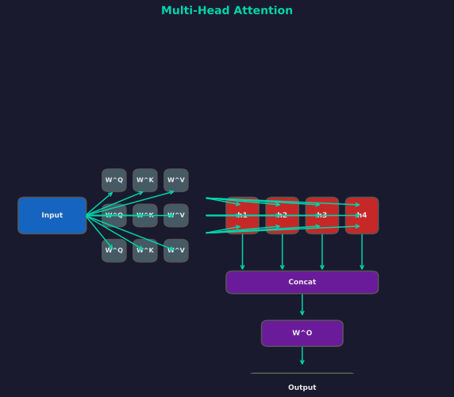
Multi-Head Attention
Typical config: h=8 heads, dk=dv=d/h=64
Ba et al. (2016). Layer Normalization
| T1 | T2 | T3 | T4 | |
| T1 | 0.4 | 0 | 0 | 0 |
| T2 | 0.2 | 0.5 | 0 | 0 |
| T3 | 0.1 | 0.2 | 0.6 | 0 |
| T4 | 0.3 | 0.3 | 0.4 | 0.7 |
Lower triangular attention pattern
| Parameter | Value | Description |
|---|---|---|
| N (layers) | 6 | Encoder and decoder stacks |
| dmodel | 512 | Embedding dimension |
| dff | 2048 | FFN inner dimension |
| h (heads) | 8 | Attention heads |
| dk = dv | 64 | Per-head dimension |
| Pdropout | 0.1 | Dropout rate |
| εLS | 0.1 | Label smoothing |
| Total Params | 65M | Base model |
| Total Params | 213M | Big model |
BERT, GPT, T5, and Beyond
BERT, RoBERTa, ALBERT, DeBERTa
GPT, LLaMA, PaLM, Claude
T5, BART, UL2
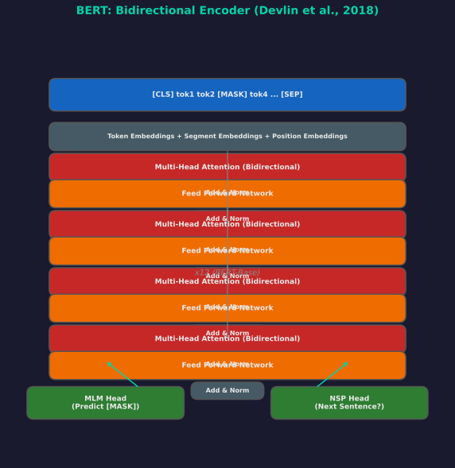
BERT Architecture
Devlin et al. (2018). BERT: Pre-training of Deep Bidirectional Transformers
| Variant | Layers | Hidden | Heads | Params |
|---|---|---|---|---|
| BERT-Base | 12 | 768 | 12 | 110M |
| BERT-Large | 24 | 1024 | 16 | 340M |
| BERT-Tiny | 2 | 128 | 2 | 4M |
| BERT-Mini | 4 | 256 | 4 | 11M |
| BERT-Small | 4 | 512 | 8 | 29M |
| BERT-Medium | 8 | 512 | 8 | 41M |
WordPiece vocab: 30,522 tokens Max length 512 tokens Pretraining data BooksCorpus + Wikipedia
Liu et al. (2019). RoBERTa: A Robustly Optimized BERT Pretraining Approach
Lan et al. (2019). ALBERT: A Lite BERT for Self-supervised Learning
| Model | Params | SQuAD F1 |
|---|---|---|
| BERT-large | 340M | 90.4 |
| ALBERT-xxlarge | 235M | 89.3 |
ALBERT-xxlarge: 12x fewer parameters than BERT-large!
He et al. (2020). DeBERTa: Decoding-enhanced BERT with Disentangled Attention
Content-to-content, content-to-position, position-to-content
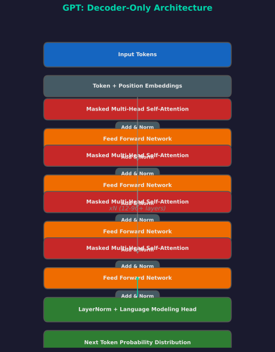
GPT Decoder-Only Architecture
Causal LM In-context Learning Emergence
| Model | Params | Layers | d_model | Heads | Batch | Context |
|---|---|---|---|---|---|---|
| Small | 125M | 12 | 768 | 12 | 0.5M | 2048 |
| Medium | 350M | 24 | 1024 | 16 | 0.5M | 2048 |
| Large | 760M | 24 | 1536 | 16 | 0.5M | 2048 |
| XL | 1.3B | 24 | 2048 | 24 | 1M | 2048 |
| 2.7B | 2.7B | 32 | 2560 | 32 | 1M | 2048 |
| 6.7B | 6.7B | 32 | 4096 | 32 | 2M | 2048 |
| 13B | 13B | 40 | 5140 | 40 | 2M | 2048 |
| 175B (GPT-3) | 175B | 96 | 12288 | 96 | 3.2M | 2048 |
Brown et al. (2020). Language Models are Few-Shot Learners
No gradient updates — "learning" happens purely through attention over context
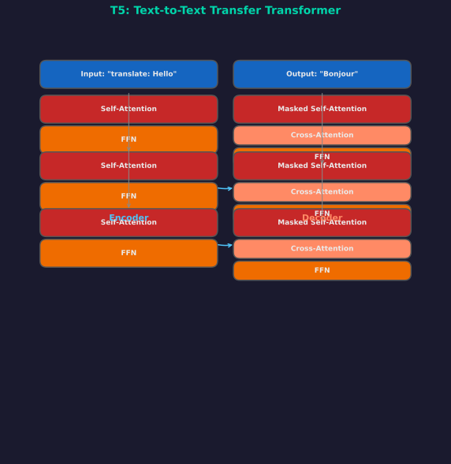
T5 Encoder-Decoder Architecture
Raffel et al. (2019). Exploring the Limits of Transfer Learning with a Unified Text-to-Text Transformer
Lewis et al. (2019). BART: Denoising Sequence-to-Sequence Pre-training
| Model | Year | Organization | Innovation |
|---|---|---|---|
| MASS | 2019 | Microsoft | Masked seq2seq pretraining |
| UniLM | 2019 | Microsoft | Unified language model (3 masks) |
| ProphetNet | 2020 | Microsoft | Future n-gram prediction |
| Pegasus | 2020 | Gap sentence generation for summarization | |
| mT5 | 2020 | Multilingual T5 (101 languages) | |
| UL2 | 2022 | Mixture of denoisers (S-denoiser, R-denoiser, X-denoiser) |
| Method | Type | Key Property | Used In |
|---|---|---|---|
| Absolute Sinusoidal | Fixed | Unique per position, unbounded distance | Original Transformer |
| Learned Absolute | Learned | Fixed max length | BERT, GPT |
| Relative (Shaw) | Relative | Clipped distance embeddings | Transformer-XL |
| RoPE | Rotary | Encodes relative pos via rotation matrix | LLaMA, PaLM, GPT-NeoX |
| ALiBi | Linear Bias | Adds distance-based penalty to attention | BLOOM, MPT |
| xPos | Extrapolatable | Extends to longer sequences | Some long-context models |
Su et al. (2021). RoFormer: Enhanced Transformer with Rotary Position Embedding
Press et al. (2021). Train Short, Test Long: Attention with Linear Biases
The Era of Scale
Kaplan et al. (2020). Scaling Laws for Neural Language Models
Power Law Predictable Emergence
Hoffmann et al. (2022). Training Compute-Optimal Large Language Models
| Model | Params | Tokens | Ratio |
|---|---|---|---|
| GPT-3 | 175B | 300B | 1.7x |
| Gopher | 280B | 300B | 1.1x |
| Chinchilla | 70B | 1.4T | 20x |
| LLaMA-1 | 65B | 1.4T | 21.5x |
| LLaMA-2 | 70B | 2T | 28.6x |
Chinchilla-optimal: 70B model outperforms 280B Gopher
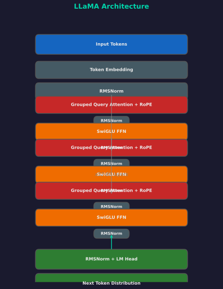
LLaMA Architecture
| Config | 7B | 13B | 33B | 65B/70B |
|---|---|---|---|---|
| Params | 6.7B | 13.0B | 32.5B | 65.2B/70B |
| Layers | 32 | 40 | 60 | 80 |
| d_model | 4096 | 5120 | 6656 | 8192 |
| Heads | 32 | 40 | 52 | 64 |
| Head Dim | 128 | 128 | 128 | 128 |
| Context | 2048 | 2048 | 2048 | 2048 (LLaMA-1) |
| Vocab | 32K | 32K | 32K | 32K |
| FFN | SwiGLU | SwiGLU | SwiGLU | SwiGLU |
| Norm | RMSNorm | RMSNorm | RMSNorm | RMSNorm |
| Pos Emb | RoPE | RoPE | RoPE | RoPE |
Chowdhery et al. (2022). PaLM: Scaling Language Modeling with Pathways
Wei et al. (2022). Emergent Abilities of Large Language Models
Conditional Computation at Scale
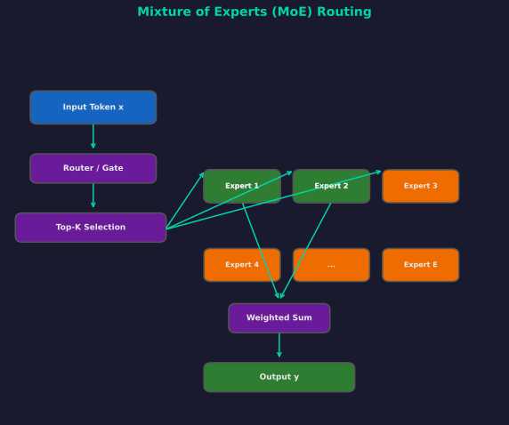
Mixture of Experts Routing
TopK sets all but the k largest values to -infinity before softmax
Lepikhin et al. (2021). GShard: Scaling Giant Models with Conditional Computation
Fedus et al. (2022). Switch Transformers: Scaling to Trillion Parameter Models
Zhou et al. (2022). Mixture-of-Experts with Expert Choice Routing
Du et al. (2021). GLaM: Efficient Scaling of Language Models with Mixture-of-Experts
Jiang et al. (2024). Mixtral of Experts
Dai et al. (2024). DeepSeekMoE: Towards Ultimate Expert Specialization
| Challenge | Description | Solutions |
|---|---|---|
| Load Imbalance | Some experts overloaded | Auxiliary loss, expert choice, capacity factor |
| Communication | All-to-all between devices | EP grouping, all-to-all optimization |
| Memory | Storing all expert params | Offloading, quantization, pruning |
| Fine-tuning Instability | MoE models hard to fine-tune | Expert dropout, stable routing, dense fine-tuning first |
| Expert Collapse | All experts become similar | Noise in routing, load balancing loss |
| Deployment | Larger memory footprint | Expert merging, distillation to dense |
Aligning Vision, Language, and Beyond
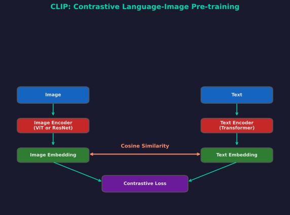
CLIP Dual Encoder Architecture
Radford et al. (2021). Learning Transferable Visual Models From Natural Language Supervision
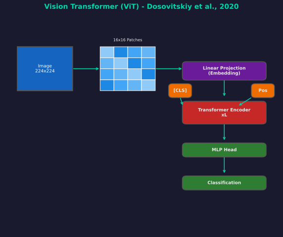
Vision Transformer (ViT)
Dosovitskiy et al. (2020). An Image is Worth 16x16 Words
| Model | Layers | Hidden | MLP | Heads | Params |
|---|---|---|---|---|---|
| ViT-Tiny | 12 | 192 | 768 | 3 | 5.7M |
| ViT-Small | 12 | 384 | 1536 | 6 | 22M |
| ViT-Base | 12 | 768 | 3072 | 12 | 86M |
| ViT-Large | 24 | 1024 | 4096 | 16 | 307M |
| ViT-Huge | 32 | 1280 | 5120 | 16 | 632M |
ViT requires large datasets (JFT-300M, ImageNet-21K) to outperform CNNs. With sufficient data, ViT scales better than ResNet.
Liu et al. (2021). Swin Transformer: Hierarchical Vision Transformer using Shifted Windows
Saharia et al. (2022). Photorealistic Text-to-Image Diffusion Models
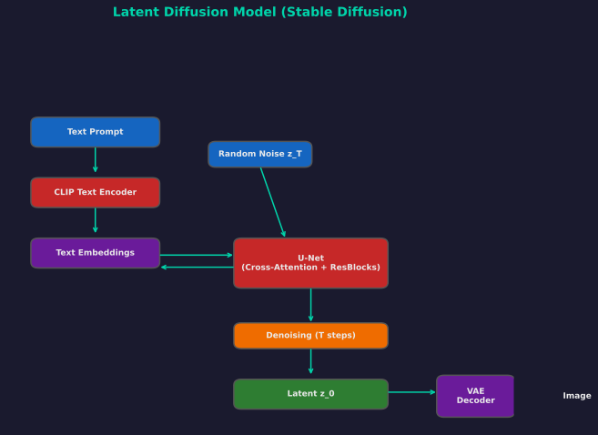
Latent Diffusion Model (Stable Diffusion)
Rombach et al. (2022). High-Resolution Image Synthesis with Latent Diffusion Models
Alayrac et al. (2022). Flamingo: a Visual Language Model for Few-Shot Learning
Liu et al. (2023). Visual Instruction Tuning
Li et al. (2023). BLIP-2: Bootstrapping Language-Image Pre-training
| Model | Year | Type | Innovation |
|---|---|---|---|
| wav2vec 2.0 | 2020 | Self-supervised | Contrastive pretraining on speech |
| HuBERT | 2021 | Self-supervised | Hidden unit BERT, clustering targets |
| Whisper | 2022 | Supervised | 680K hours multilingual, encoder-decoder |
| AudioLM | 2022 | Generative | Audio continuation, hierarchical |
| MusicLM | 2023 | Generative | Text-to-music from hummed melodies |
| VALL-E | 2023 | TTS | Neural codec + language model |
| SpeechGPT | 2023 | Speech LLM | Cross-modal instruction following |
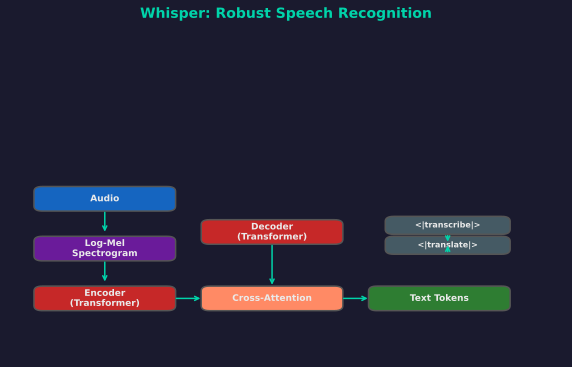
Whisper Encoder-Decoder Architecture
Radford et al. (2022). Robust Speech Recognition via Large-Scale Weak Supervision
Beyond Classification
Carion et al. (2020). End-to-End Object Detection with Transformers
Kirillov et al. (2023). Segment Anything
Liu et al. (2022). A ConvNet for the 2020s
He et al. (2022). Masked Autoencoders Are Scalable Vision Learners
Oquab et al. (2023). DINOv2: Learning Robust Visual Features without Supervision
Beyond the Standard Transformer
| Model | Pattern | Complexity |
|---|---|---|
| Transformer | Dense | O(n^2) |
| Longformer | Window + Global | O(n) |
| BigBird | Random+Window+Global | O(n) |
| Reformer | LSH hashing | O(n log n) |
| Linformer | Low-rank | O(n) |
| Performer | FAVOR+ kernel | O(n) |
Dao et al. (2022). FlashAttention: Fast and Memory-Efficient Exact Attention
Liu et al. (2023). Ring Attention with Blockwise Transformers
Gu et al. (2021). Efficiently Modeling Long Sequences with Structured State Spaces
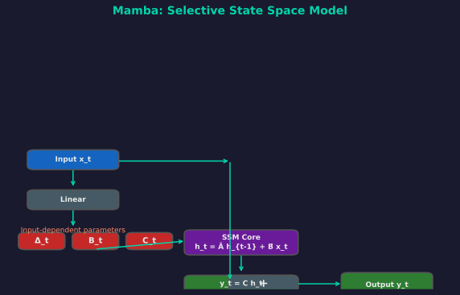
Mamba Selective State Space Model
Gu & Dao (2023). Mamba: Linear-Time Sequence Modeling with Selective State Spaces
Peng (2023). RWKV: Reinventing RNNs for the Transformer Era
Sun et al. (2023). Retentive Network: A Successor to Transformer for Large Language Models
Hu et al. (2021). LoRA: Low-Rank Adaptation of Large Language Models
| Method | 65B Model Memory | GPU |
|---|---|---|
| Full Finetune | 780 GB | 16x A100 |
| LoRA (16-bit) | ~130 GB | 2x A100 |
| QLoRA | ~41 GB | 1x A100 |
Hinton et al. (2015). Distilling the Knowledge in a Neural Network
From VAEs to Diffusion
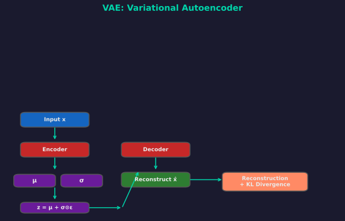
VAE: Variational Autoencoder
Kingma & Welling (2013). Auto-Encoding Variational Bayes
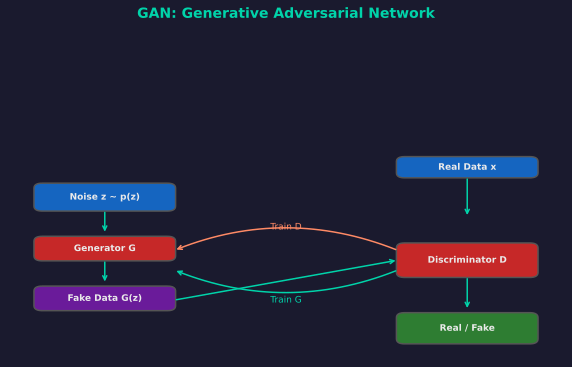
GAN: Generative Adversarial Network
Goodfellow et al. (2014). Generative Adversarial Networks
| Model | Year | Innovation |
|---|---|---|
| DCGAN | 2015 | First stable CNN-based GAN |
| CGAN | 2014 | Conditional generation |
| WGAN | 2017 | Wasserstein distance, more stable |
| ProGAN | 2017 | Progressive growing of layers |
| StyleGAN | 2018 | Style-based generator, mapping network |
| StyleGAN2 | 2019 | AdaIN fixes, path regularization |
| StyleGAN3 | 2021 | Alias-free synthesis |
| BigGAN | 2018 | Large-scale class-conditional |
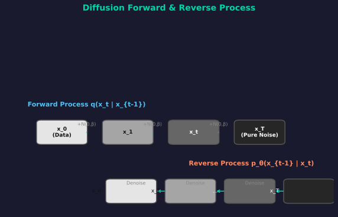
Diffusion Forward & Reverse Process
Ho et al. (2020). Denoising Diffusion Probabilistic Models
| Variant | Innovation | Speedup |
|---|---|---|
| DDIM | Non-Markovian deterministic sampling | 10-50x |
| DDPM++ | Improved parameterization and architecture | Better quality |
| Score SDE | Continuous-time formulation | Unified theory |
| Latent Diffusion | Diffuse in VAE latent space | Memory efficient |
| Consistency Models | Direct mapping, no iterative denoising | Single step |
| Flow Matching | Optimal transport paths | More stable |
Lipman et al. (2022). Flow Matching for Generative Modeling
From Pretraining to Alignment
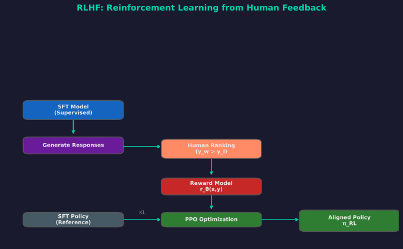
RLHF Pipeline
Ouyang et al. (2022). Training language models to follow instructions with human feedback
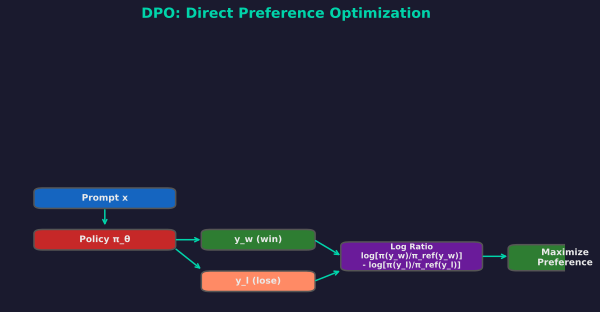
DPO: Direct Preference Optimization
Rafailov et al. (2023). Direct Preference Optimization: Your Language Model is Secretly a Reward Model
| Method | Year | Key Idea |
|---|---|---|
| SLiC | 2023 | Sequence likelihood calibration, simpler than DPO |
| IPO | 2023 | Identity Preference Optimization, better generalization |
| KTO | 2024 | Kahneman-Tversky, per-example instead of pairs |
| SimPO | 2024 | Simple preference optimization, no reference model |
| ORPO | 2024 | Odds ratio preference optimization, single stage |
| SPIN | 2024 | Self-play, no human preferences needed |
Bai et al. (2022). Constitutional AI: Harmlessness from AI Feedback
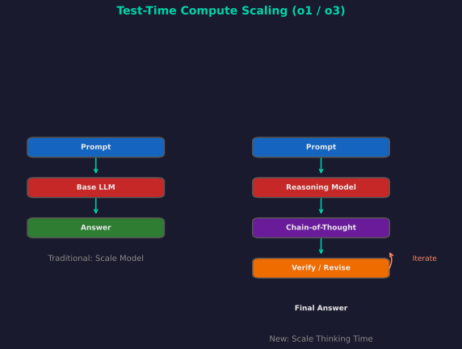
Test-Time Compute Scaling
Extending Context Beyond Parameters
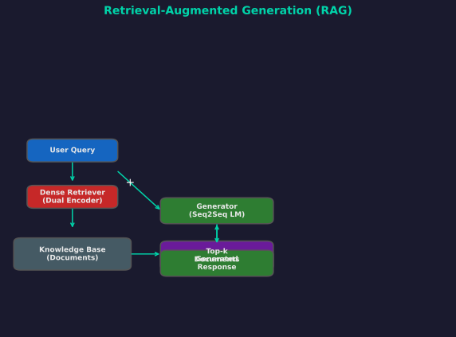
RAG Architecture
Lewis et al. (2020). Retrieval-Augmented Generation for Knowledge-Intensive NLP Tasks
| Variant | Approach | Key Feature |
|---|---|---|
| DPR | Dense passage retrieval | Dual-encoder, bi-encoders |
| FiD | Fusion-in-Decoder | Process each doc separately, fuse in decoder |
| REPLUG | Plug-in retrieval | Retrieve + ensemble without finetuning |
| Self-RAG | Reflective retrieval | Model decides when to retrieve |
| FLARE | Active retrieval | Retrieve proactively during generation |
| CRAG | Corrective RAG | Evaluate and correct retrieved docs |
Wu et al. (2022). Memorizing Transformers
| System | Mechanism | Capacity |
|---|---|---|
| Neural Turing Machine | Differentiable memory + attention | Fixed addressable |
| Differentiable Neural Computer | NTM + temporal linking | Fixed addressable |
| Memory Networks | Key-value memory + hops | Large but fixed |
| Memorizing Transformer | kNN over past KV pairs | Unbounded |
| RMT | Recurrent memory tokens | Bounded segments |
| Tape | External read-write tape | Unbounded |
From Models to Acting Systems
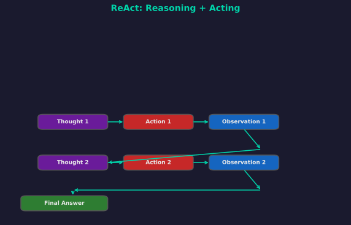
ReAct: Reasoning + Acting
Yao et al. (2022). ReAct: Synergizing Reasoning and Acting in Language Models
Shinn et al. (2023). Reflexion: Self-Reflective Agents
Training at Scale
| Strategy | What is split | Comm Pattern | Use Case |
|---|---|---|---|
| Data Parallelism | Batch across GPUs | All-reduce gradients | Standard, most common |
| Model Parallelism | Layers across GPUs | Point-to-point | Large models |
| Pipeline Parallelism | Stages (subsets of layers) | Point-to-point | Very deep models |
| Tensor Parallelism | Individual layers | All-reduce/All-gather | Wide layers |
| Sequence Parallelism | Sequence dimension | All-gather | Long contexts |
| Expert Parallelism | MoE experts | All-to-all | MoE models |
Rajbhandari et al. (2019). ZeRO: Memory Optimizations Toward Training Trillion Parameter Models
| Stage | Memory | Speed |
|---|---|---|
| Baseline | 16Psi | 1x |
| ZeRO-1 | 4Psi | ~1x |
| ZeRO-2 | 2Psi | ~1x |
| ZeRO-3 | Psi/N | 0.6-0.8x |
| ZeRO-Offload | Single GPU | 0.3-0.5x |
Psi = model parameter memory
| Technique | Description | Impact |
|---|---|---|
| Continuous Batching | Dynamic batching of requests | 10-20x throughput |
| PagedAttention (vLLM) | Block-based KV cache management | 2-4x throughput |
| Speculative Decoding | Draft small model, verify large | 2-3x speedup |
| Quantization (INT8/INT4) | Lower precision weights | 2-4x memory reduction |
| TensorRT-LLM | Fused kernels, optimized graphs | 4-6x speedup |
| Medusa / Lookahead | Multiple future token prediction | 2x speedup |
What is Next in AI Architecture
LeCun (2022). A Path Towards Autonomous Machine Intelligence
Hasani et al. (2020). Liquid Time-constant Networks
| Pattern | Best For | Key Models |
|---|---|---|
| Dense Transformers | General purpose | GPT-4, LLaMA, Claude |
| Mixture of Experts | Scaling parameters | Mixtral, GLaM, Switch |
| Multi-Modal | Vision + Language | GPT-4V, Gemini, LLaVA |
| Diffusion | Image/Audio generation | Stable Diffusion, DALL-E |
| State Space | Long sequences | Mamba, S4, RWKV |
| Retrieval-Augmented | Knowledge tasks | RAG, kNN-LM |
| Agent Systems | Tool use, reasoning | ReAct, AutoGPT |
Transformers Mixture of Experts Multi-Modal Diffusion State Space Models Vision Transformers RAG Agent Systems
Built with Reveal.js | Comprehensive Survey of Deep Learning Architectures